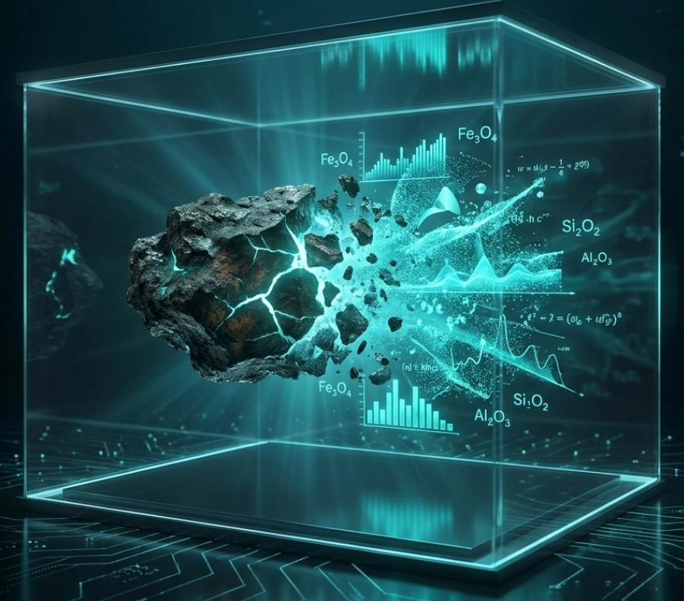
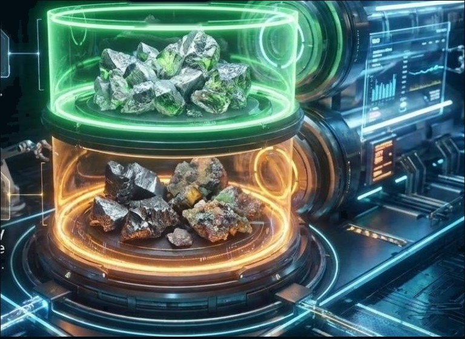
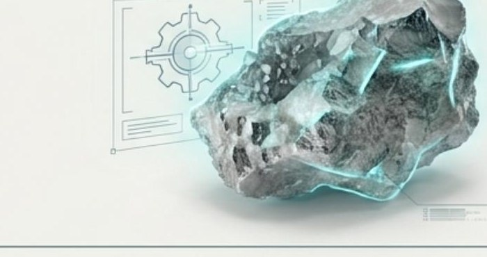
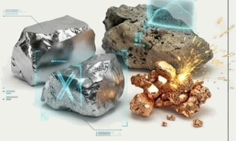

This section is for those who want to understand the technical side before sending any data.

The processing route for silicomanganese slag. The engineering part has been completed:

The route is developed — that is the engineering part, and it has been done. Laboratory verification is the next step on the same route, not a sign that the work has yet to begin.
Confirmed data about a material appears only after testing. Before testing, metal content, particle size and recovery remain assumptions. We say so plainly rather than leaving it for later.

Silicomanganese slag, ferrochrome, ferrosilicon, EAF steelmaking slags, sludges, mixed dump material. The process route is built around your material: composition, particle size, the form the metal takes and how it behaves under crushing differ for every material, and they are established by testing. That is why we start with the material rather than with a ready-made line.


A plant laboratory is usually set up to control the melt. Liberation of metal intergrowths, crushability and abrasiveness indices, magnetic response by size class — these are tasks for a mineral processing laboratory, and the equipment for them is normally not present at a plant.
What your laboratory can and cannot carry out is determined by the testing programme written for the specific material. We set that list out explicitly, before work begins.
We have no laboratory of our own. Testing is carried out by an independent laboratory to a programme we write. Where appropriate, the plant laboratory can also run the tests — to the same programme, within its capabilities.